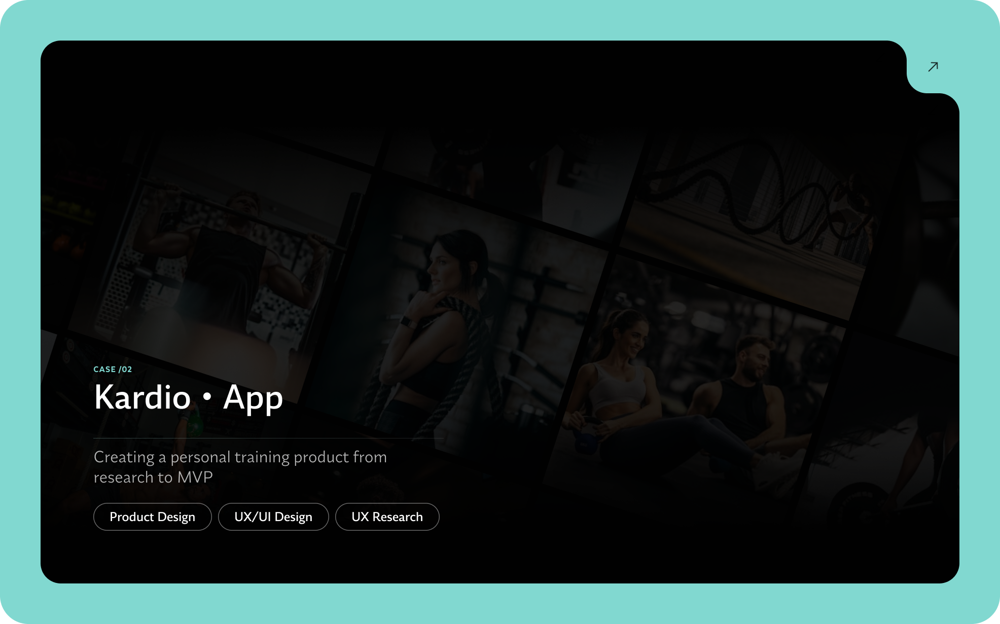

Case Study
A product that started with a real frustration, not a slide opportunity.

Origin
I didn't start Kardio because I wanted to "break into the fitness market." I started it because, as a client, I used one of the most popular workout apps in Brazil to track my training — and I came out of that experience with an odd feeling: the app worked, but it didn't convince me. My personal trainer set up the workouts, I accessed them, did the basics, and that was it. Everything was too correct to be memorable. It lacked energy, it lacked clarity at certain moments, it lacked a reason to come back.
That caught my attention for a simple reason: training isn't just a task. For the person on the other side, there's discipline, insecurity, broken routines, guilt for missing sessions, and motivation that fluctuates. When the product treats all of this as a static list of exercises, it technically works — but it doesn't do much to sustain the behavior.
I invited a developer colleague to build the project with me. I led product vision, research, structure, UX, and interface. He came in on the development side. From the very beginning, the ambition was clear: create something that helps trainers run their business better while making clients feel there's real follow-through.
Discovery
At first, the temptation would be to look only at the visible layer of the problem: outdated screens, unattractive interface, lack of polish. But that would be superficial. The interface bothered me first, but the real problem was a few levels deeper.
The question that guided the project: what's missing in these experiences for the trainer to scale consistently and for the client to stay engaged longer?
The answer pointed to a broken routine. The trainer uses one tool for workouts, another to communicate with clients, another for billing, another to track progress. The client receives guidance from one place, motivation from another, follow-ups through a different channel. This fragmentation has an operational cost for the trainer and an emotional cost for the client.
Kardio's core problem: it wasn't just about organizing workouts. It was about reducing dispersion, giving structure to the professional's operations, and turning follow-up into a continuous experience.
Efficiency, structure, and better visibility over student retention
Too much manual work, fragmented tools, and difficulty keeping students engaged
The platform needed to reduce operational load and make workout management easier
Clarity, motivation, and visible progress
Impersonal apps, low engagement, and difficulty staying consistent alone
The experience needed to feel guided, rewarding, and easy to follow
"I didn't want to make 'just another workout app.' I wanted to design a product with more depth."
Research
The research phase played an important role because I didn't want to fall into the trap of designing purely from personal conviction. My experience as a client was the trigger, but it couldn't become the absolute argument.
I started by building a research canvas to organize hypotheses, questions, and segments. The segment became clear quickly: freelance personal trainers — especially those working online or in a hybrid model — and clients who depend on consistency more than intensity.
I mapped stakeholders early on, because this product carried implications for business, support, growth, and positioning. It wasn't just a relationship between trainer and client.
Benchmark
I looked at MFit and Everfit as the closest references. Everfit interested me for its sense of a more mature product and its visual care. MFit was inevitable given its local relevance. I also broadened the scope to include Trainerize, My PT Hub, and TrueCoach, as well as indirect references like Strava and Nike Run Club.
The benchmark showed that the market already had good point solutions. There were decent apps for organizing workouts, good products for tracking and motivation, and useful tools for management. What I didn't see was an experience that treated operations, follow-up, and retention as parts of the same product decision.
Validation
I created a survey to talk with personal trainers and understand their routines, tools used, most exhausting tasks, and willingness to try a new solution. Those who agreed to participate in later tests would receive lifetime access to the app.
The data reinforced the direction. Many professionals already had some tool for workouts, but WhatsApp continued to dominate communication. Administrative routines consumed hours of the day. Creating and updating workouts came up as a tiring task. Keeping clients motivated, too.
Another strong signal: the gap between current satisfaction and interest in trying an integrated platform. Existing tools solved just enough to remain in use, but not enough to generate loyalty. When a product has a market but hasn't yet earned loyalty, there's room to enter with a better proposition. And "better" didn't mean more features. It meant more coherence.
Research
Creating and updating workouts came up as the most exhausting task — cited by nearly 3 out of 4 professionals. Right behind it, keeping clients engaged.
The most cited problem wasn't technical — it was the lack of client engagement. Tools existed, but they didn't build connection.
Opportunity signal
Satisfaction with current tools
Interest in testing an integrated and automated platform
When asked what would motivate switching to a new app, automation and personalization led — reinforcing that the problem isn't functionality, but coherence and control.
"When I stopped thinking about features and started thinking about risk, the product reasoning became clearer."
Strategy
Kardio's biggest risk was trying to solve everything. The problem had many threads: workouts, execution, payment, communication, progress, library, scheduling, content, motivation, retention. Instead of asking "what could the app have?", I started asking "what needs to exist for this product to feel inevitable for both sides?"
For the trainer, three things needed to be evident: they would save time, gain structure, and have better visibility into their own client base. For the client, three others: their routine would become clearer, the experience more engaging, and progress more visible.
Kardio wouldn't be an MVP reduced to login, workout list, and profile. I preferred a more ambitious MVP in the perceived value layer and more disciplined in the technical layer. A high-fidelity functional experience, with enough depth to sustain the proposition, but without promising a complete backend before its time.
Scope
Immediate value and operational clarity
Retention and commercial growth
Differentiation and intelligence
Architecture
The backbone was centered on users with distinct roles, trainer and student profiles, base and custom exercises, workout templates, format-based blocks, configurable items per exercise, assigned workouts, completed sessions, and logs per set.
The gamification logic followed the same principle: simple, readable, and sufficient. XP per completed workout, consistency bonuses, streak counted by finished sessions, levels based on accumulated XP, and PR detection. AI was introduced with low-risk, clear-value criteria: exercise description generation, AI Workout Generator support, and progression suggestions without auto-application.
The domain-based architecture — separating features like workouts, exercises, gamification, chat, payments, and reports — helped keep the product modular from early on, prepared to grow without requiring structural rewrites.
Interface
In designing the experience, the constant concern was avoiding making Kardio feel too conceptual. I wanted it to feel current but not ornamental; clear but not dumbed down; premium but not distant.
Everfit served as a visual reference because it conveyed maturity without excess. From there, I defined a consistent design system. The goal was never to "have a nice UI kit." The goal was to make fewer visual decisions from scratch and focus energy on the flows that truly required reasoning.
In the end, the prototype had 47 functional screens, over 60 custom components, and around 200 mapped functionalities. Without a solid system, consistency would have been lost quickly.
"I preferred to build a case where product, experience, and value model were connected."
Process
One decision that significantly shortened the path between idea and prototype was the intentional use of AI in the process. I used it to accelerate exploration, reduce friction between wireframe and implementation, and iterate faster.
The value wasn't in automating decisions, but in freeing up time for what still requires judgment: problem framing, MVP scoping, prioritization, and experience coherence. This project reflects the way I've been working: incorporating AI where it amplifies quality and pace, without outsourcing thinking.
Status
Kardio has reached its current phase as a functional MVP under construction, with well-defined product direction and a clear evolution plan. I'm not treating the MVP as the end of the project or as an isolated prototype. Kardio was designed from the start as a product that would keep evolving.
We organized the work on a board, with a backlog separated by trainer and client fronts, plus columns for idea, MVP, V1, V2, to do, and in progress. This organization protects the priority logic: what needed to be validated first, what could wait, and what would only make sense with more usage maturity.
Today, the MVP covers the core of the proposition and serves as a concrete foundation for the next step. This case study isn't static — as the product advances, I also update the documentation of decisions, cuts, and learnings.
Structure
Reflection
Kardio was important to me because it demanded more than interface design. It demanded problem framing, market reading, scope definition, prioritization under ambiguity, and decisions about where it was — or wasn't — worth investing energy.
If I had taken the easier route, I might have made a lighter app, faster to deliver, and easier to explain. But it probably wouldn't have had enough substance to sustain the proposition.
The result isn't just a well-resolved prototype. It's a line of reasoning about what makes a product gain ground in a market that already has tools but still leaves a lot on the table. And, for me, that was exactly where it was worth stepping in.
Next project